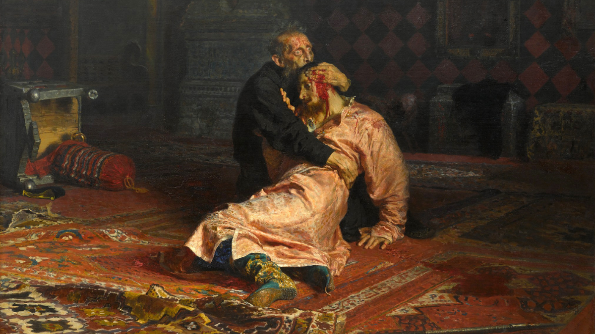

Welcome to KoleksiKlasik, Mahakarya sejarah yang mengisahkan kehidupan umat manusia dalam segala keindahannya. Toko kami menjual koleksi-koleksi langka sejarah yang memiliki nilai tinggi
OUR PRODUCT

Lukisan "Ivan the Terrible and His Son" oleh Ilya Repin (1883-1885)